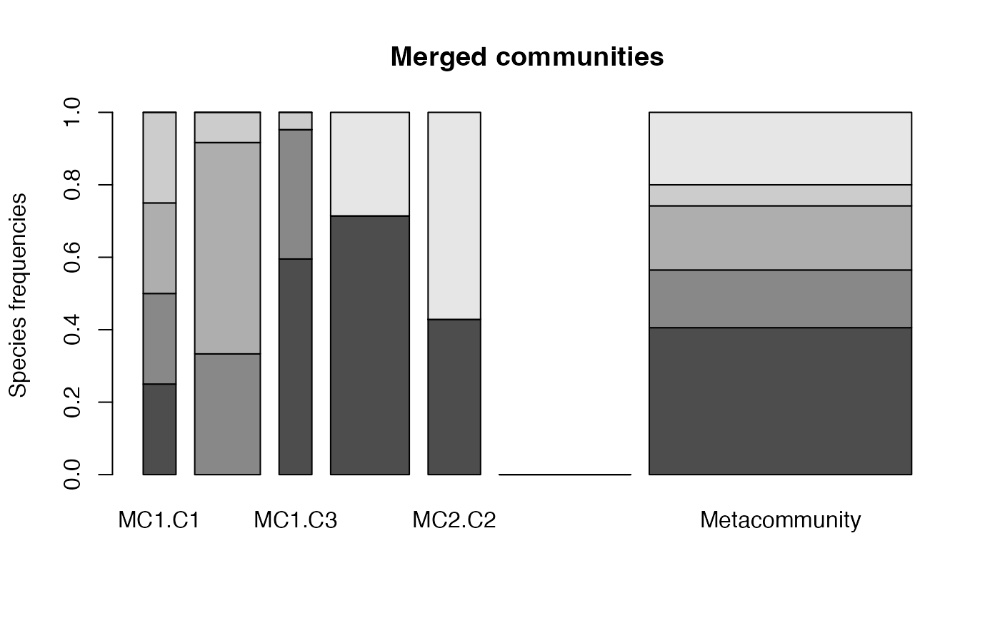

Manipulation of meta-communities
MergeMC.RdTools to manipulate meta-communities. From a list of meta-communities, MergeMC creates a metacommunity whose communities are each original metacommunity. MergeC creates a metacommunity whose communities are each original community. ShuffleMC randomly assigns original communities to a metacommunity, keeping original weights, and returns a list of meta-communities.
Arguments
- MClist
A list of
MetaCommunityobjects.- Weights
A vector of numbers containing the weight of each metacommunity of the list. It does not have to be normalized to sum to 1.
- CheckArguments
Logical; if
TRUE, the function arguments are verified. Should be set toFALSEto save time when the arguments have been checked elsewhere.
Details
MergeMC is used for hierarchical partitioning of diversity. The gamma diversity of communities of the list becomes alpha diversity of the merged meta-community.
MergeC creates a new meta-community by mixing original ones. Original communities are kept, their new weight is the product of their original weight and the weight of their original meta-community.
ShuffleMC is used for simulations of the null hypothesis that all metacommunities of the list are identical.
Examples
# First meta-community
(df <- data.frame(C1 = c(10, 10, 10, 10), C2 = c(0, 20, 35, 5),
C3 = c(25, 15, 0, 2), row.names = c("sp1", "sp2", "sp3", "sp4")))
#> C1 C2 C3
#> sp1 10 0 25
#> sp2 10 20 15
#> sp3 10 35 0
#> sp4 10 5 2
w <- c(1, 2, 1)
MC1 <- MetaCommunity(Abundances = df, Weights = w)
# Second meta-community
(df <- data.frame(C1 = c(10, 4), C2 = c(3, 4), row.names = c("sp1", "sp5")))
#> C1 C2
#> sp1 10 3
#> sp5 4 4
w <- c(3, 2)
MC2 <- MetaCommunity(Abundances = df, Weights = w)
# Merge communities
plot(MergeC(list(MC1, MC2)), main="Merged communities")

# Merge metacommunities
plot(MergeMC(list(MC1, MC2)), main="Merged meta-communities")
 smc <- ShuffleMC(list(MC1, MC2))
plot(MergeMC(smc), main="Shuffled, then Merged meta-communities")
#> Warning: Zhang-Huang sample coverage cannot be estimated because one probability is over 1/2. Chao estimator is returned.
smc <- ShuffleMC(list(MC1, MC2))
plot(MergeMC(smc), main="Shuffled, then Merged meta-communities")
#> Warning: Zhang-Huang sample coverage cannot be estimated because one probability is over 1/2. Chao estimator is returned.